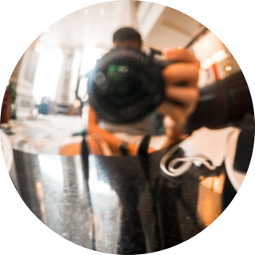

I'm exploringmouth
CEO of Mouth.Inc | Board Director | CIO of Happy Belly
I strive to discover, enjoy and share the best dining experiences with anyone and everyone. I connect my customers and merchants with community reviews, best deals and meaningful feedback. My mission is to help people enjoy good food with the people they love - anytime, anywhere

Our #ForeverHungry community doesn’t just eat and eat, they share honest photo reviews to help other diners, and provide useful private feedback to restaurants.

Editing promotional content for Discovery Network's broadcast and social media located locally and overseas. Final mastering of clips for broadcast purposes. Liaising with clients and colleagues regarding brief and changes. Creating, exporting and uploading submasters for completed projects.

What I believe: Business is the most powerful force for positive change in the world. Business is good because it creates value; it is ethical because it is based on voluntary exchange; it is noble because it can elevate our existence; and it is heroic because it lifts people out of poverty and creates prosperity.
CONTACT ME